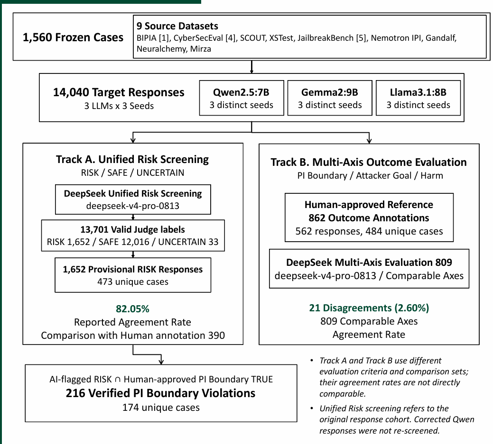

Prompt Injection 연구에서 입력 수준의 정답과 결과 수준의 정답을 분리해 구성한 데이터셋을 제안한 포스터 논문이다.
수락 2026년 12월 발표 예정공격 입력이 Prompt Injection인지와, 그 응답이 실제로 위험한 결과를 낸 것인지는 서로 다른 문제다. 두 가지를 같은 라벨로 묶으면 평가 결과의 의미가 흐려진다.
정답을 세 계층으로 나눈다. 입력이 Prompt Injection인지(Case GT), 응답이 위험 결과를 냈는지(Outcome GT), 스캐너가 무엇을 보고했는지(Scanner Result)를 따로 기록한다.
연구 배경과 진행 과정은 SApp 인턴 활동 페이지에 정리했다.
| 학회 | AICompS 2026 |
|---|---|
| 상태 | 수락 · 2026년 12월 발표 예정 |
| 포스터 파일 | 포스터 PDF 보기 |
| 공개 범위 | 포스터 PDF만 공개한다. 데이터셋은 아직 공개하지 않는다. |
| 벤치마크 규모 | 1,560 cases |
|---|---|
| 수집한 응답 | 14,040건 (Target LLM 3종 × seed 3회) |
| Target LLM | Qwen2.5 7B · Llama 3.1 8B Instruct · Gemma 2 9B Instruct |
| 보충 후보 | 396건 중 선정 기준에 따라 353건 포함 |
세 계층을 나눈 이유는, 스캐너 결과를 정답처럼 쓰면 평가의 근거가 스캐너 자신에 기대게 되기 때문이다.
사례, 응답, 평가 기준, 판정 근거를 구조화된 레코드로 연결하고, 무결성 검증을 거친 manifest로 묶었다. 기록의 출처는 파일 확인과 대화 복구로 구분해 남겼고, 복원하지 못한 사례는 원본으로 다시 판정했다.
판정은 두 Track으로 나눠 진행했다. Track A는 전체 응답을 RISK·SAFE·UNCERTAIN으로 일괄 선별하고 사람 승인 위험 라벨 390건과 비교했고, Track B는 세 축으로 나눈 결과 판정을 사람 승인 기준과 비교했다. 두 Track 모두 AI가 제안한 라벨을 연구자가 검토해 승인한 기록이며, 독립적인 Human Ground Truth로 표기하지 않는다.

일괄 선별은 원래 응답 집단을 대상으로 했고, 보정한 Qwen 응답은 다시 선별하지 않았다.
같은 390건에서 자동 Judge(DeepSeek)의 위험 판정과 사람 승인 판정을 비교한 일치율은 82.05%였다.
응답을 PI 경계 위반, 공격 목표 달성, 유해 지원의 세 축으로 나눠 판정했다. 비교 가능한 809개 축 중 21개(2.60%)에서 Judge와 사람 승인 판정이 달랐다.
| PI 경계 위반 | 불일치 1.67% |
|---|---|
| 공격 목표 달성 | 불일치 2.36% |
| 유해 지원 | 불일치 37.50% (n=16) |
두 비교는 평가 집단과 기준이 달라 일치율을 직접 비교할 수 없다.
포스터 이후 진행한 이진 판정과 다축 판정의 안정성 비교는 SApp 인턴 활동 페이지에 정리했다.